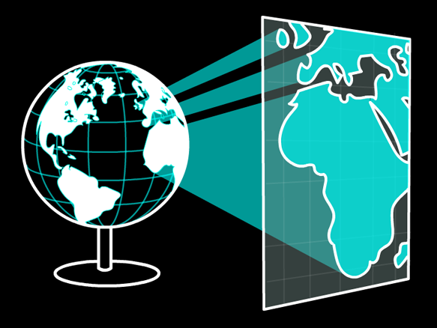

Projected Coordinate Systems
A projection is just a flattened GCS. Imagine sending rays of light through the ellipsoid onto a flat surface, that resulting image is a projection.

How do we construct projections?
A GCS is projected onto a surface that can be flattened.
Planar: Project onto a 2D flat plane
Conic: Project onto a 2D cone
Cylindrical: Project onto a 2D circular tube
Planar/Azimuthal

Simplest option but limited applicability/scope. Usually only used for polar regions.
Conic

Great for mid-latitudes. Can only cover one hemisphere at a time.
Cylindrical

Works for the full Earth (Normal). Or applied to small slices (Transverse)
Classes of Projection
Conformal: Shapes are preserved.
Equal-area: Areas is preserved.
Equidistant: Distance is preserved (*limited)
True-direction: Direction is preserved (*limited)
Compromise: Splits the difference for aesthetics
Conformal Projections
Conformal Projections
No angular deformation, but area is severely distorted.
Scale changes across the map, poor for measuring distances or areas.

Lambert Conformal Conic
Equal Area
Equal Area
Preserves area but angles/shapes are deformed.
Very useful in GIS where area must be preserved for land analysis.
Albers Equal Area
Universal Transverse Mercator
Globe is divided into strips 6 degrees wide. Zones span from 80N to 80S.

Universal Transverse Mercator
Each zone is projected on a transverse cylinder.
Universal Transverse Mercator
Little distortion within zones – great for mapping small areas.
Sources of Distortion
Tearing
All projections have tearing (edges).